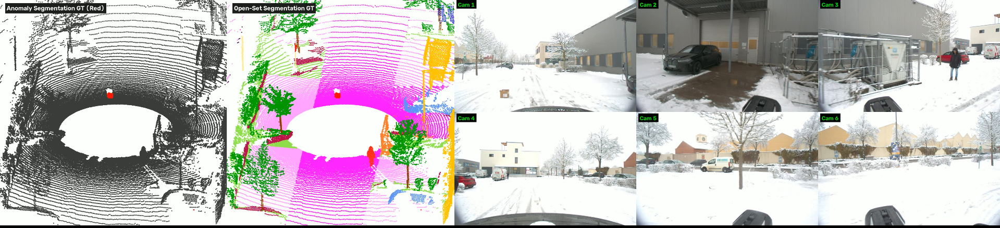

Accepted at IEEE/CVF WACV 2027 • Datasets Track

Recent advances in 3D semantic segmentation have significantly improved scene understanding in autonomous driving. However, existing methods are typically developed under a closed-set assumption and evaluated under standard driving conditions, where all categories are known in advance. In real-world driving, autonomous vehicles inevitably encounter previously unseen objects, making closed-set perception insufficient for safe deployment[cite: 3].
To address this challenge, we introduce DriveOSS, which, to the best of our knowledge, is the first real-world multimodal dataset and benchmark specifically designed for 3D anomaly segmentation and open-set semantic segmentation. It contains 12,661 synchronized and annotated frames captured using six surround-view RGB cameras, a 128-beam LiDAR, and a GPS/IMU unit. The dataset comprises 52 real-world driving scenes collected under clear, nighttime, cloudy, rainy, and snowy conditions and is organized into ID (in-distribution) and OOD (out-of-distribution) subsets. The ID scenes contain only known classes and are used for training, whereas the OOD scenes additionally contain unknown objects annotated as the outlier class and are used for validation and testing. Extensive experiments show that unseen objects remain a major challenge for current 3D perception systems. We will release the dataset, benchmark protocols, and code upon publication[cite: 3].
Recorded with an Ouster OS1-128 LiDAR (20 Hz), 6 Basler RGB cameras (10 Hz), and RTK-INS (600 Hz) across Clear, Nighttime, Cloudy, Rainy, and Snowy conditions on geographically disjoint ID and OOD routes.
Unlike binary anomaly benchmarks that discard background semantics, DriveOSS retains all 19 known ID classes + 1 Outlier class in OOD scenes, enabling true 3D Open-Set evaluation via 3D mOpen-IoU.
Benchmarks P3Former, LCPS-lidar, Mask4Former3D, LIDO, LCPS, and our query-level fusion baseline Mask4Former3D* across MSP, MaxLogit, Energy, Entropy, and RbA scoring.
| Dataset | Year | Weather & Illumination | Modality | LiDAR Beams | Cameras | OOD Scene Annotations | Tasks |
|---|---|---|---|---|---|---|---|
| SemanticKITTI | 2019 | Clear only | L + C | 64 | Front | × None (Closed-set) | SS, PS |
| Panoptic nuScenes | 2021 | Diverse | L + C | 32 | 6× Surround | × None (Closed-set) | PS |
| SemanticSTF | 2023 | Fog / Rain / Snow | L + C | 64 | Front | × None (Closed-set) | SS |
| Panoptic-CUDAL | 2025 | Rain | L + C | 128 | Surround | × None (Closed-set) | PS |
| STU | 2025 | Clear only | L + C | 128 | Surround | Binary (Inlier / Outlier) | PS, AS |
| LIDO (Synthetic Mix) | 2026 | Clear only | LiDAR | 32 / 40 / 64 | — | Binary (Inlier / Outlier) | AS |
| DriveOSS (Ours) | 2027 | Clear, Night, Cloudy, Rain, Snow | L + C | 128 | 6× Surround | ✓ 19 ID Classes + Outlier | SS, AS, OSS |
Switch between our three benchmark tasks and hardware runtime profile on the DriveOSS test set.
| Method | Modality | car | bicycle | motorcycle | truck | other-veh. | person | bicyclist | motorcyclist | road | parking | sidewalk | other-ground | building | fence | vegetation | trunk | terrain | pole | traffic-sign | outlier ↑ | mOpen-IoU ↑ |
|---|---|---|---|---|---|---|---|---|---|---|---|---|---|---|---|---|---|---|---|---|---|---|
| P3Former + MSP | L | 24.69 | 0.0 | 0.0 | 6.56 | 0.0 | 0.14 | 1.00 | 0.0 | 0.03 | 0.0 | 0.0 | 0.0 | 0.05 | 0.13 | 1.26 | 0.05 | 0.0 | 0.03 | 0.06 | 0.28 | 1.79 |
| P3Former + ML | L | 22.96 | 0.0 | 0.0 | 6.33 | 0.0 | 0.95 | 0.28 | 0.0 | 0.02 | 0.0 | 0.0 | 0.0 | 1.37 | 0.48 | 1.43 | 0.28 | 0.01 | 0.07 | 0.27 | 0.27 | 1.80 |
| P3Former + Energy | L | 25.45 | 0.0 | 0.0 | 6.55 | 0.0 | 1.14 | 0.30 | 0.0 | 0.02 | 0.0 | 0.0 | 0.0 | 1.70 | 0.49 | 1.16 | 0.32 | 0.0 | 0.07 | 0.30 | 0.27 | 1.98 |
| P3Former + Entropy | L | 24.65 | 0.0 | 0.0 | 6.63 | 0.0 | 0.15 | 0.85 | 0.0 | 0.02 | 0.0 | 0.0 | 0.0 | 0.05 | 0.16 | 1.07 | 0.05 | 0.0 | 0.03 | 0.05 | 0.27 | 1.78 |
| P3Former + RbA | L | 2.13 | 0.0 | 0.0 | 0.0 | 0.0 | 0.0 | 0.0 | 0.0 | 16.62 | 1.03 | 0.51 | 0.72 | 65.18 | 0.08 | 53.47 | 13.10 | 4.49 | 0.35 | 1.14 | 1.51 | 8.36 |
| LCPS-lidar + MSP | L | 41.78 | 9.74 | 1.46 | 11.21 | 0.0 | 29.56 | 9.91 | 0.0 | 31.21 | 0.14 | 8.55 | 0.0 | 74.63 | 16.03 | 54.87 | 5.60 | 0.32 | 13.55 | 64.90 | 0.61 | 20.66 |
| LCPS-lidar + ML | L | 16.48 | 17.52 | 2.54 | 11.19 | 0.0 | 23.98 | 16.67 | 0.0 | 16.40 | 1.03 | 35.03 | 0.29 | 40.60 | 19.63 | 35.17 | 19.51 | 1.68 | 13.03 | 31.90 | 0.25 | 14.97 |
| LCPS-lidar + Energy | L | 16.33 | 17.29 | 2.48 | 10.97 | 0.0 | 23.71 | 16.46 | 0.0 | 16.03 | 0.92 | 34.12 | 0.29 | 39.99 | 18.82 | 34.96 | 18.68 | 1.63 | 12.53 | 31.39 | 0.27 | 14.64 |
| LCPS-lidar + Entropy | L | 41.47 | 9.79 | 1.53 | 11.27 | 0.0 | 29.53 | 10.01 | 0.0 | 31.51 | 0.14 | 8.84 | 0.0 | 75.30 | 16.50 | 55.06 | 5.89 | 0.32 | 13.56 | 65.25 | 0.61 | 20.75 |
| LCPS-lidar + RbA | L | 8.79 | 3.16 | 1.96 | 0.70 | 0.0 | 7.15 | 10.06 | 0.0 | 4.66 | 0.79 | 0.50 | 0.59 | 1.95 | 0.91 | 34.83 | 1.85 | 0.98 | 0.47 | 32.62 | 0.32 | 4.08 |
| M4F3D + MSP | L | 38.96 | 7.50 | 11.90 | 14.49 | 0.00 | 35.85 | 18.18 | 0.00 | 0.27 | 0.08 | 0.26 | 0.01 | 0.18 | 0.23 | 0.08 | 0.34 | 0.01 | 0.03 | 0.25 | 0.30 | 6.77 |
| M4F3D + ML | L | 28.77 | 6.83 | 8.93 | 9.82 | 0.00 | 30.10 | 16.11 | 0.00 | 3.71 | 0.26 | 2.51 | 0.02 | 7.19 | 1.43 | 7.68 | 4.52 | 0.52 | 2.97 | 3.72 | 0.33 | 7.11 |
| M4F3D + Energy | L | 15.69 | 1.56 | 6.36 | 7.35 | 0.09 | 20.36 | 8.39 | 0.00 | 1.50 | 0.54 | 0.84 | 0.13 | 1.20 | 0.34 | 1.12 | 0.83 | 0.19 | 0.41 | 0.59 | 0.32 | 3.88 |
| M4F3D + Entropy | L | 34.41 | 8.15 | 11.91 | 14.26 | 0.05 | 34.42 | 18.94 | 0.00 | 0.25 | 0.08 | 0.25 | 0.01 | 2.43 | 0.05 | 0.95 | 0.29 | 0.01 | 0.03 | 0.27 | 0.30 | 6.52 |
| M4F3D + RbA | L | 34.90 | 11.11 | 8.39 | 11.84 | 0.53 | 28.14 | 27.06 | 0.00 | 18.85 | 13.46 | 17.87 | 0.16 | 4.44 | 0.26 | 2.64 | 3.59 | 2.43 | 0.73 | 1.60 | 0.32 | 9.58 |
| LIDO (Joint) | L | 38.77 | 7.64 | 0.00 | 10.00 | 11.32 | 18.52 | 17.06 | 0.00 | 38.76 | 11.97 | 36.27 | 0.02 | 93.97 | 62.56 | 78.08 | 13.96 | 21.36 | 7.30 | 0.16 | 1.07 | 22.98 |
| LCPS + MSP | L+C | 37.99 | 1.91 | 3.56 | 7.22 | 0.22 | 24.57 | 17.38 | 0.0 | 25.86 | 0.09 | 5.41 | 0.04 | 76.74 | 27.13 | 40.03 | 4.51 | 1.65 | 8.41 | 45.23 | 0.57 | 17.26 |
| LCPS + ML | L+C | 4.99 | 0.59 | 0.0 | 0.89 | 0.0 | 6.15 | 4.20 | 0.0 | 11.45 | 0.97 | 0.67 | 0.66 | 26.86 | 6.04 | 18.70 | 4.97 | 5.61 | 2.97 | 5.58 | 0.39 | 5.29 |
| LCPS + Energy | L+C | 4.78 | 0.49 | 0.0 | 0.07 | 0.0 | 5.67 | 3.74 | 0.0 | 11.20 | 0.95 | 0.62 | 0.65 | 25.97 | 5.80 | 18.21 | 4.78 | 5.52 | 2.93 | 5.31 | 0.39 | 5.09 |
| LCPS + Entropy | L+C | 37.88 | 1.94 | 3.60 | 7.40 | 0.22 | 24.64 | 17.50 | 0.0 | 26.08 | 0.10 | 5.76 | 0.04 | 77.60 | 26.88 | 40.30 | 4.71 | 1.67 | 8.49 | 45.93 | 0.57 | 17.41 |
| LCPS + RbA | L+C | 4.73 | 4.47 | 5.03 | 11.37 | 0.04 | 19.68 | 22.66 | 0.0 | 11.50 | 2.18 | 10.25 | 2.05 | 20.38 | 1.98 | 14.04 | 32.98 | 9.24 | 2.28 | 7.48 | 0.37 | 9.60 |
| M4F3D* + MSP | L+C | 53.49 | 2.51 | 6.67 | 8.42 | 0.53 | 32.45 | 28.43 | 0.56 | 10.84 | 0.00 | 0.56 | 0.05 | 1.19 | 0.78 | 0.66 | 2.00 | 0.46 | 0.33 | 0.52 | 0.30 | 7.92 |
| M4F3D* + ML | L+C | 26.19 | 1.27 | 3.45 | 6.96 | 0.10 | 17.83 | 14.10 | 0.00 | 2.17 | 0.00 | 0.30 | 0.01 | 0.37 | 0.11 | 0.19 | 0.50 | 0.03 | 0.04 | 0.07 | 0.31 | 3.88 |
| M4F3D* + Energy | L+C | 12.69 | 0.82 | 1.04 | 4.72 | 0.14 | 8.53 | 10.76 | 0.00 | 0.28 | 0.00 | 0.06 | 0.01 | 0.01 | 0.00 | 0.00 | 0.10 | 0.00 | 0.01 | 0.03 | 0.32 | 2.06 |
| M4F3D* + Entropy | L+C | 51.67 | 2.60 | 6.62 | 9.04 | 0.60 | 31.04 | 29.93 | 0.51 | 9.76 | 0.00 | 0.58 | 0.05 | 1.14 | 0.50 | 0.69 | 1.77 | 0.40 | 0.26 | 0.47 | 0.30 | 7.77 |
| M4F3D* + RbA | L+C | 44.83 | 5.30 | 4.88 | 8.21 | 2.48 | 37.81 | 32.96 | 0.52 | 17.18 | 0.03 | 18.55 | 0.65 | 10.49 | 2.91 | 3.45 | 8.86 | 7.87 | 2.94 | 4.20 | 0.21 | 11.27 |
| Method | Modality | AUROC (%) ↑ | FPR@95 (%) ↓ | AP (%) ↑ |
|---|---|---|---|---|
| P3Former + RbA | LiDAR | 89.80 | 45.94 | 3.53 |
| LCPS-lidar + Entropy | LiDAR | 79.76 | 46.95 | 1.38 |
| Mask4Former3D + MSP | LiDAR | 79.43 | 98.74 | 10.27 |
| Mask4Former3D + RbA | LiDAR | 67.91 | 100.00 | 12.57 |
| LIDO | LiDAR | 91.70 | 32.66 | 4.44 |
| LCPS + Entropy | L + C | 78.67 | 54.44 | 1.59 |
| Mask4Former3D* + MSP | L + C | 70.38 | 96.85 | 7.11 |
| Method | Modality | DriveOSS-ID Val mIoU (%) ↑ | DriveOSS-OOD Test (ID Points) mIoU (%) ↑ | Domain Shift Drop (Δ) |
|---|---|---|---|---|
| P3Former | LiDAR | 43.27 | 29.58 | −13.69 |
| LCPS-lidar | LiDAR | 51.94 | 33.75 | −18.19 |
| Mask4Former3D | LiDAR | 34.98 | 31.11 | −3.87 |
| LIDO | LiDAR | 58.35 | 40.99 | −17.36 |
| LCPS | L + C | 54.05 | 34.00 | −20.05 |
| Mask4Former3D* (Query Fusion) | L + C | 48.44 | 28.46 | −19.98 |
| Method | Modality | Base Network (ms) | +MSP | +ML | +Energy | +Entropy | +RbA | Total Per-Frame Latency ↓ |
|---|---|---|---|---|---|---|---|---|
| P3Former | LiDAR | 51.29 | 0.07 | 0.10 | 0.13 | 0.10 | 0.11 | 51.36 – 51.42 ms (~19.5 FPS) |
| LIDO | LiDAR | 68.01 | End-to-End Joint Semantic + Anomaly Branch | 68.01 ms (~14.7 FPS) | ||||
| LCPS-lidar | LiDAR | 85.44 | 0.12 | 0.17 | 0.25 | 0.19 | 0.18 | 85.56 – 85.69 ms |
| Mask4Former3D | LiDAR | 104.21 | 0.11 | 0.17 | 0.23 | 0.18 | 0.13 | 104.32 – 104.44 ms |
| Mask4Former3D* (Query Fusion) | L + C | 106.35 | 0.10 | 0.16 | 0.21 | 0.17 | 0.12 | 106.45 – 106.56 ms (+2.05% vs L-only) |
| LCPS (Dense Point-Pixel Fusion) | L + C | 179.80 | 0.11 | 0.16 | 0.21 | 0.15 | 0.16 | 179.91 – 180.01 ms (+110.4% vs L-only) |
@inproceedings{yan2027driveoss,
title = {DriveOSS: Dataset and Benchmark for 3D Anomaly Segmentation and Open-set Semantic Segmentation in Autonomous Driving},
author = {Yan, Zhiran and Bhanderi, Savankumar and Lolge, Sourabh and Song, Rui and Paneliya, Girdharbhai and Agrawal, Shiva and Elger, Gordon},
booktitle = {TODO},
year = {TODO}
}